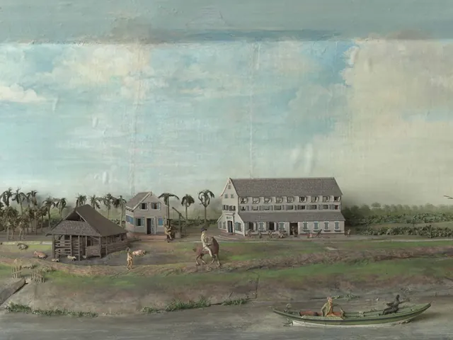
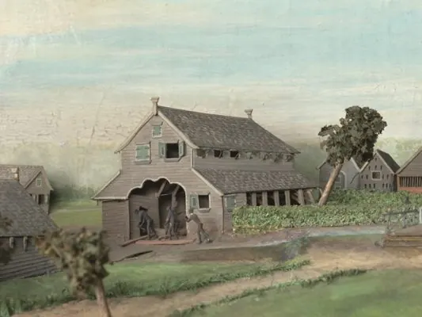

Nieuws ·
Replica van kijkkast Gerrit Schouten tentoongesteld in Suriname

Het Nationaal Archief Suriname presenteert in samenwerking met Valkhof Museum in Nederland en Museum Bakkie in Suriname de expositie Uit de schaduw van het diorama: Plantage Kerkshoven. Tijdens de tentoonstelling wordt een replica van de kijkkast, die plantage Kerkshoven in beeld brengt, voor het eerst aan het publiek getoond. De hoogwaardige replica is gebaseerd op een origineel diorama van plantage Kerkshoven dat in 1823 is gemaakt door de Surinaamse kunstenaar Gerrit Schouten en behoort tot de collectie van Valkhof Museum.
Het diorama geeft in 3D een tafereel weer op de plantage Kerkshoven aan de Warappakreek in Suriname. Het brengt de plantage in beeld op een manier die de Nederlandse eigenaren zal hebben bevallen: in vol bedrijf en haast idyllisch. Maar vandaag de dag, 200 jaar later, kijken steeds meer mensen daar met heel andere ogen naar. Want Kerkshoven was een plantage waar ongeveer 140 slaafgemaakte mensen gedwongen woonden en werkten.
Kijkkast Gerrit Schouten
Er zijn ruim dertig diorama’s bekend van Gerrit Schouten. Ze waren waarschijnlijk bedoeld als ‘pronkstuk’ om de eigenaren in Nederland – en hun bezoekers – een indruk te geven van hun bezittingen in Suriname. De kijkkast geeft een uniek beeld van hoe de koffieplantage er ruim tweehonderd jaar geleden uitzag. Het toont een deel van het leven van de slaafgemaakte mensen die gedwongen op de plantages werkten, maar vertelt niet het hele verhaal. De akkers, waar het harde werk plaatsvond, zijn bijvoorbeeld niet afgebeeld. Met de tentoonstelling ‘Uit de schaduw van het diorama, plantage Kerkshoven’ worden verhalen van tot slaafgemaakten die niet van het diorama af te lezen zijn, belicht en uit de schaduw gehaald.
De grond van een aantal plantages werd na de afschaffing van de slavernij in 1863 verhuurd aan de mensen die daarvoor als slaafgemaakte hadden moeten werken. Een aantal van hun nazaten leeft nog altijd in de buurt van de oude plantagegrond. Anderen zijn er zelfs weer teruggekeerd. Zo ook Marsha Mormon, die zich samen met haar partner Bas Spek heeft gevestigd op de voormalige plantage Reynsdorp aan de Warappakreek, tegenwoordig Bakkie genoemd. Daar creëerden zij een plek waar aandacht wordt besteed aan de geschiedenis van het gebied en van Marsha Mormons familie. Haar betovergrootvader werd in slavernij geboren op plantage Kerkshoven.
Valkhof Museum
Marsha Mormon en Bas Spek zochten in 2017 contact met het Valkhof Museum in Nijmegen. Zij wezen op het belang van de kijkkast, die lange tijd in het depot van het museum was opgeslagen en niet door het publiek kon worden gezien. Door Bas en Marsha beseften de medewerkers van het museum dat het diorama juist een belangrijke rol zou moeten spelen in het vertellen over deze belangrijke gedeelde geschiedenis. Er kwam een bijzondere samenwerking tot stand.
In 2023 is de kijkkast gerestaureerd. Daarna is door Miniworld Rotterdam een replica van het diorama gemaakt. Op die manier kan de geschiedenis van plantage Kerkshoven op twee plekken aan de hand van een diorama worden verteld: in Suriname en in Nederland. Door onderzoek zijn er nieuwe verhalen en perspectieven naar boven gekomen over de bewoners en hun dagelijks leven op de plantage. In de tentoonstelling is er daarom ook aandacht voor wat niet te zien is op het diorama: het harde werk, de gewelddadige onderdrukking en het verzet daartegen.
Uit de schaduw van het diorama: Plantage Kerkshoven toont voor het eerst onderzoeksresultaten en verhalen die met het diorama verbonden zijn. Na afloop van de expositie wordt de replica van het diorama permanent tentoongesteld in Museum Bakkie. In 2025 opent in Valkhof Museum een tentoonstelling naar aanleiding van het project.

De restauratie van het diorama en het onderzoek zijn mede mogelijk gemaakt door bijdragen van Vereniging Rembrandt (mede dankzij haar VriendenLoterij Restauratiefonds), DutchCulture, Mondriaan Fonds, Cultuurfonds en Stichting Wijjocha.
Meer lezen over het Diorama? Ga naar www.valkhofmuseum.nl/diorama
In de bedrijvengids: Valkhof Museum